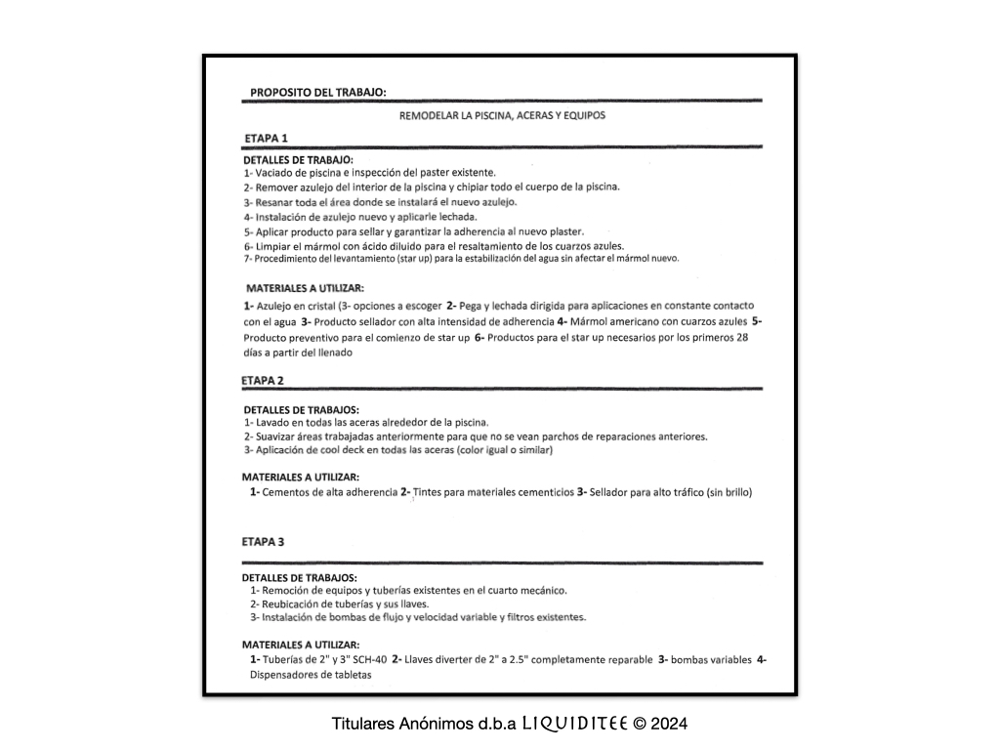
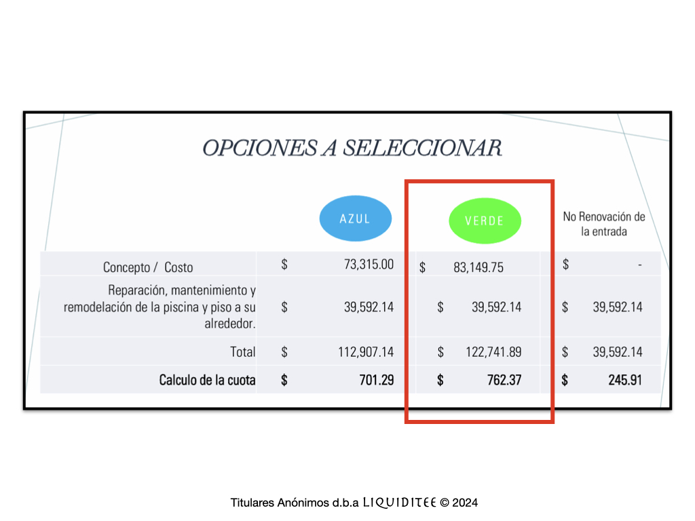

Estimados Titulares,
Les damos la bienvenida a esta presentación detallada sobre la realidad actual de nuestra urbanización, Villas Reales. En los últimos meses, la sociedad activista anónima, Liquiditee, realizó un análisis de las urbanizaciones que están en nuestro entorno, evaluando de manera crítica el mantenimiento de las facilidades comunales y recreativas, la administración y la eficiencia en el manejo de los servicios esenciales. A continuación, le presentamos los resultados de dicha investigación para que todos los titulares tengan una visión clara del estado actual de nuestras instalaciones y puedan tomar decisiones informadas sobre el futuro de la urbanización.
Comparativa con Urbanizaciones Vecinas
Al comparar Villas Reales con urbanizaciones vecinas, observamos una gran disparidad en la calidad de los servicios y el mantenimiento. Urbanizaciones como Colinas Metropolitanas, Mansiones Reales, y Estancias Reales, por ejemplo, lograron restablecer con éxito programas de servicios municipales, garantizando que áreas con servidumbre pública, como jardines, calles, aceras, muros y encintados reciban el mantenimiento necesario de parte del municipio. Estos programas cubren desde desyerbo y poda de árboles, hasta limpieza de muros y alcantarillas. En el análisis del estado físico de las áreas y facilidades comunes, se notó que el mantenimiento de las instalaciones en comunidades vecinas supera el de Villas Reales.
Curiosamente, analizando algunas de las imágenes proporcionadas simplemente con chatGPT 4.o Computer Vision, las mismas destacan comentarios que resaltan la falta de mantenimiento y supervisión en áreas claves confirmando así su deterioro.
La Realidad de Villas Reales
Deterioro de Áreas Comunes y Servicios
El deterioro de las facilidades de las áreas comunes, jardines, caseta de seguridad, baños y oficina, es alarmante. Este estado de decadencia es atribuible, en parte, al pobre rendimiento de los proveedores de servicios pero, más preocupante aún, a la evidente falta de supervisión administrativa. La gestión en Villas Reales se ha caracterizado por su falta de transparencia y supervisión, lo que ha permitido que estos servicios se deterioren sin una corrección adecuada. Preguntas críticas incluyen: (1) ¿Cómo es posible que con los recursos asignados no tengamos resultados visibles? (2) ¿Quién audita y supervisa las actividades de mantenimiento? (3) ¿Qué tareas cubren realmente los contratos de los proveedores de servicios? (4) ¿Que garantías tenemos del contratista por el $$$ dinero invertido?
El Parque Pasivo Infantil
Con una inversión de $9,660 dólares provenientes de una Derrama a los Titulares en el 2022 y $5,000 del fondo Operacional de VR (2023); se instaló una nueva estación de juego y se arreglaron y pintaron las existentes. Según carta enviada vía correo electrónico el 27 de marzo de 2024, el presidente de JDVR, Sr. José Bagué, comunicó la culminación del proyecto “Parque de Juegos” y citamos; “Después de varias cancelaciones de los proveedores, logramos que el nuevo “Play Yard” fuera adquirido e instalado y que el resto del parque fuera pintado”
A solo 6 meses de haberlo completado vean cómo están las facilidades:
El cementado de las bases, expuesto por encima del nivel del terreno, crea una situación de peligro para tropiezos y caídas
El equipo de juegos presenta pintura completamente desprendida, y piezas oxidadas que no fueron reemplazadas exponiendo el metal, riesgo que puede comprometer la seguridad de los niños.
Esta raíz, con crecimiento protuberante, ha sido obviada tanto por el encargado de mantenimiento, así como el personal de mantenimiento de las áreas verdes, RV Management Solutions, del cual el administrador es dueño.
Sin embargo, hacer click en este enlace para que vean como lucen las facilidades de Estancias Reales y el centro recreativo de Colinas Metropolitanas
Canchas de Tenis/ pickleball y Baloncesto
La cancha de tenis, que debería ser un espacio seguro para el deporte, presenta grietas profundas con crecimiento de vegetación, lo que crea una superficie peligrosa y un claro ejemplo de negligencia. La constante acumulación de agua en la cancha indica serios problemas de drenaje. Estos problemas, que podrían resolverse fácilmente con mantenimiento básico, no solo deterioran las instalaciones, sino que también representan riesgos directos para los jugadores.
En mayo del 2022, se le pago al Sr. Alberto Camacho (suplidor/ contratista), por un nuevo “Windscreen” VCP, color verde oscuro, con ventanillas y tres costuras de refuerzo para los cuatro lados de la cancha, incluyendo los portones y transom. El trabajo fue hecho a un costo de $3,726.00, (con instalación, amarras y sogas). Actualmente, vean lo que tenemos solo dos (2) después. Redes protectoras alrededor de las instalaciones desgarradas, lo que crea inquietudes del manejo de su mantenimiento y conservación.
Como parte de la comparable, hacer click en este enlace para que vean como lucen las canchas en Colinas Metropolitanas
Proyecto Piscina - Mantenimiento y Resultados
El Proyecto Área de Piscina fue aprobado en la Asamblea General del 18 de octubre del 2023, haciendo uso de una pagina descriptiva con algunos detalles del trabajo. No se presentó ningún desglose detallado o estimado formal de los costos, ni se mencionaron los contratistas responsables del mismo, lo que ha generado serias preocupaciones sobre la transparencia de este proyecto. Esta remodelación totalizo $39,592.14 los cuales forman parte de la “Derrama” de $122,741.89 solicitada por la JDVR (ref. alternativa verde) y aprobada por mayoría de votos. (No por unanimidad como comunicaron en la Minuta del 23 de octubre del 2023).
 
El día 14 de agosto de 2024, el Sr. Emanuel Rivera, Administrador envió, vía correo electrónico, un comunicado sobre los inicios de los trabajos de remodelación. Los mismos comenzaron el 15 de agosto de 2024. A pesar de las inclemencias del tiempo durante este periodo, notamos que para el sábado, 14 de septiembre ya habían llenado la piscina y dado por terminado los trabajos. Sin embargo, la comunidad se pregunta si los trabajos realmente cumplieron con los estándares esperados, especialmente en tan corto tiempo.
El contratista encargado, Juan Pablo García, ha sido quien tradicionalmente ha dado mantenimiento general a la piscina, pero se cuestiona si posee las credenciales adecuadas para manejar una construcción/ remodelación de tal envergadura. En comunicado del 24 de septiembre de 2024, nuestro Administrador, el sr. Emanuel Rivera notifica que las facilidades de la piscina están disponibles para uso y disfrute de todos los residentes. Veamos como lucen las facilidades:
Es evidente qué hay serios problemas en la aplicación de los materiales, decoloración en el piso del interior de la piscina, corrección de las grietas, y terminaciones en general.
A pesar de la inversión considerable en el área, el cuarto de máquinas de la piscina sigue usándose como un espacio de almacenamiento “covacha” desorganizado, sin recibir mejoras significativas. La falta de organización y pintura en este espacio sigue siendo un tema pendiente, especialmente cuando los residentes están pagando más de $10,000 anuales (alrededor de $835 mensuales) por conceptos de limpieza y mantenimiento según el Presupuesto. Además, se suman otros $20,000 asignados a la partida de “Reparaciones y Mantenimiento" (Item 6600 del Presupuesto) de los cuales no tenemos su desglose y uso.
Las imágenes del cuarto de máquinas muestran cajas de receptáculos oxidados, cables eléctricos expuestos y sistemas de plomería en mal estado, lo que representa un grave riesgo de corto circuito y seguridad que requiere atención inmediata.
Estos problemas claramente reflejan un uso irresponsable de los recursos y confianza brindada a la Junta de Directores de la Asociación de Residentes de Villas Reales, Inc. Se gastan considerables sumas de dinero, pero el estado de las instalaciones sigue siendo mediocre. Es evidente que no se están tomando las medidas necesarias para mantener la calidad de vida de los residentes, lo que plantea serias dudas sobre la gestión financiera de la administración actual.
Sistema de Control de Acceso y Falta de Actualización
El sistema de control de acceso en Villas Reales representa un punto de gran preocupación. La falta de limpieza del equipo y el estado de la maquinaria en su interior, reflejan serios problemas de desgaste, falta de piezas y oxidación que pueden afectar su operatividad. Actualmente, se pagan a All Service $3,360 anuales por mantenimiento de estos equipos, más $1,000+ en reparaciones según el Presupuesto VR 2023-2024.
Igualmente, el sistema de Intercom muestra obsolecencia y fallas en la comunicación. El alambrado, dejando cables expuestos, es significativo de un estado de abandono y aumenta las probabilidades de mal funcionamiento y cortocircuitos, comprometiendo la seguridad de la comunidad. Advertimos que el “Proyecto Entrada”, (alternativa verde), NO contempló la sustitución o actualización de estos equipos. Se levantan preocupaciones sobre si las pobres condiciones de la maquinaria actual puede mover adecuadamente el peso de los portones modificados.
Para abordar esta situación, contactamos a los tres principales suplidores y distribuidores de maquinaria y equipos de control de acceso para obtener información sobre la capacidad de uso de nuevos sistemas. Durante la búsqueda de soluciones, pudimos identificar un proveedor para el mantenimiento de los motores, que mediante un contrato mensual de $295.00, incluye piezas, limpieza, lubricación, ajuste y pintura. Esta opción presenta, a corto plazo, una oportunidad para mejorar el estado del sistema actual, aunque no se deben descartar las propuestas de modernización dado el alarmante deterioro del equipo.
Aspecto Interior de la Caseta de Seguridad
La Caseta alberga el personal de seguridad 24/7. Es necesario, proveerles del espacio y equipo adecuado para maximizar su operación y productividad además de que cuenten con facilidades idóneas para el manejo de sus necesidades básicas. El mantenimiento y limpieza regular, así como su organización, evita el deterioro prematuro de las facilidades y asegura un ambiente de trabajo más agradable para que el personal de vigilancia pueda llevar a cabo sus funciones. Sin embargo, vean por sí mismos como luce nuestra caseta.
Uno de los puntos críticos que debe ser corregido, es el desagüe del la unidad de A/C en el lavamanos del baño, afectando las condiciones sanitarias y aspecto estético del área. Tampoco cuentan con gabinetes para guardar pertenencias y productos de higiene personal. El baño, que debe ser un espacio seguro para el personal de vigilancia, se ha convertido en un “chiquero” / “pocilga” desorganizada de almacenamiento.
El área de trabajo, carece de módulos para la organización de materiales de trabajo, documentos, y carpetas, pero sobretodo, de una silla adecuada y cómoda. Indudablemente, vemos condiciones en avanzado estado de deterioro.
El espacio que alberga el tanque de gas, contiguo a la caseta, también sirve como almacén, obviando importantes medidas de seguridad básicas. Por ser altamente inflamable, debemos alejar todo material de fácil combustión y corrosión para evitar riesgos de incendio / explosión. Tampoco cuenta con la debida rotulación de peligro y cerradura adecuada.
Les advertimos que la remodelación del interior de la caseta de seguridad, tampoco fue contemplada en el “Proyecto Entrada” (alternativa verde). Los fondos que se utilizarán para el proyecto fueron recaudados mediante una Derrama que totalizó $83,149.75, solicitada por la JDVR (ref. alternativa verde) y aprobada por mayoría de votos. (No por unanimidad como comunicaron en la Minuta del 23 de octubre del 2023).
Incumplimientos en Convocatorias de Asambleas
Es importante destacar que en la pasada Asamblea General se violo el Artículo VIII, Sección 5 del Reglamento de VR, que estipula que todo proyecto de mejoras permanentes, que no esté presupuestado y exceda los $5,000 dólares, debe ser consultado mediante el mecanismo de Reunión Extraordinaria. Los titulares fuimos privados del derecho a evaluar las diferentes alternativas de conceptos y contratistas licitadores. No hubo la consulta colectiva en la toma de decisiones de mayor envergadura. En su lugar, se votó por un único concepto, previamente seleccionado por la Junta Directiva, sin un desglose claro de los elementos incluidos, ni de sus costos. La comunidad, en efecto, entregó un "cheque en blanco".
Otro problema significativo que hemos identificado es la irregularidad con la que se ha convocado la Asamblea Anual de la Asociación. Según el Artículo III, Sección 1 del Reglamento de Villas Reales, la Asamblea debe convocarse no más tarde de la tercera semana de septiembre, algo que no se ha cumplido en los pasados años. Este incumplimiento refleja la negligencia de la Junta Directiva y del Administrador en seguir los estatutos que, como comunidad, hemos aprobado colectivamente. El ciclo de contabilidad adoptado (Artículo IX) comienza en julio y termina en junio de cada año fiscal, lo que refuerza la importancia de que la Asamblea se convoque dentro del plazo reglamentario. No obstante, la falta de acción por parte de la Junta Directiva ha privado a los titulares de participar de manera oportuna y efectiva en la toma de decisiones que afectan el futuro de Villas Reales.
Impugnación del Acta de Asamblea
El Acta es un documento oficial y esencial que debe recoger con precisión las intervenciones de todos los miembros participantes, así como las proposiciones, controversias, decisiones y acuerdos alcanzados durante la Asamblea. Su correcta elaboración es fundamental para validar las decisiones tomadas y para que todos los titulares puedan tener confianza en los procesos administrativos. Cualquier error u omisión en el Acta compromete la legitimidad del proceso.
El 18 de noviembre de 2023, se envió al Sr. José Rosario, actual Secretario de la Junta de Directores de Villas Reales, una impugnación formal del Acta de la Asamblea General del 18 de octubre de 2023, y una Solicitud de Correccion de la misma. Esta acción se tomó debido a que el Acta, redactada por el, y enviada a los titulares el 23 de octubre de 2023, estaba incompleta y presentaba errores en los resultados de la votación. Es importante señalar que el único asunto que obtuvo votación unánime fue el NO aumento de la cuota mensual de $170.00. La impugnación solicitó que el Acta refleje de manera exacta la votación y los acuerdos alcanzados para garantizar que se respete la participación de cada titular. En consecuencia, hemos incluido el Acta corregida en formato PDF bajo el título Impugnación de Acta, a fin de que cada titular pueda revisarla cuando lo desee.
Falta de Transparencia en las Finanzas
Hemos solicitado, en múltiples ocasiones, un desglose detallado de todas las transacciones y proyectos, incluyendo la remodelación del “Proyecto Entrada”, “Proyecto Piscina” y el Arreglo del Parque Infantil, pero no hemos obtenido respuestas. La gestión financiera de Villas Reales está marcada por un preocupante hermetismo, que impide que los titulares ejerzan su derecho a revisar cómo se utilizan los fondos de la comunidad.
Uno de los ejemplos más preocupantes, de la falta de transparencia financiera en Villas Reales, es la negativa constante de la Junta Directiva y del Administrador a proporcionar información sobre los gastos y contratos. El 28 de noviembre de 2023, solicitamos formalmente, al Secretario y al Tesorero de la Junta de Directores, mediante el correo electrónico urbvillasreales@gmail.com, la siguiente información financiera: * Desglose de todas las transacciones contenidas en la partida de “Reparación y Mantenimiento” (item 6600) del Informe de Gastos que totalizaron $18,246.00 del Presupuesto 2022-2023; en adición julio 2023- YTD.
Cotización desglosada del Proyecto Verde Remodelación de la Entrada que totalizó $83,149.75. Costo de cada uno de los elementos considerados e incluidos en la alternativa Verde. Información del /los contratistas asignados a las diferentes fases del proyecto.
Cotización desglosada del Proyecto Piscina que totalizo $39,592.00. Costo de los materiales /equipo/ mano de obra según los detalles de trabajo/ etapas del proyecto. (Refiérase a pág. Propósito del Trabajo incluida de la Convocatoria – Asamblea del 18 de octubre de 2023). Nombre del Contratista designado.
Cotización actualizada del Arreglo del Parque Infantil que ya suman $9,660 de la Derrama 2022-2023 mas unos $5,000 del fondo Operacional y todavía no sabemos que es lo que conlleva. ¿Cuál es el Proyecto?¿Costos? Esta información se volvió a solicitar el 27 de febrero de 2024 y el 3 de agosto de 2024, sin recibir respuesta alguna.
Además, hemos indagado si la Asociación de Residentes de Villas Reales, como corporación sin fines de lucro, ha solicitado la exención contributiva provista bajo la Sección 1101.01 de la Ley Núm. 1 del 31 de enero de 2011, según enmendada, que forma parte del Código de Rentas Internas para un Nuevo Puerto Rico. Esta exención permitiría a la Asociación estar exenta del pago de IVU por los servicios prestados. Sin embargo, no tenemos evidencia de que se haya solicitado esta exención al Departamento de Hacienda, lo cual es una obligación que la Asociación debe cumplir anualmente mediante la Planilla Informativa de Organización Exenta de Contribución sobre Ingresos (Forma 480.7 OE).
Irregularidades en Contratos y Conflictos de Interés
En lo que respecta a la administración y contabilidad, la Junta Directiva de la Asociación ha contratado los servicios de RV Management & Solutions, dirigida por Emanuel Rivera, quien además actúa como contratista responsable del mantenimiento de las áreas verdes comunales. RV Management & Solutions se describe, principalmente, como una empresa dedicada a “Landscape care” (mantenimiento de áreas verdes y jardinería). Este hecho genera inquietudes sobre la idoneidad de este proveedor para manejar la administración de Villas Reales.
La falta de acceso a la información sobre los contratos actuales de mantenimiento plantea serias preocupaciones. Las preguntas sobre posibles conflictos de interés y la falta de supervisión en la adjudicación de contratos son alarmantes. Como titulares, merecemos transparencia en cuanto a las credenciales, certificaciones y licencias de los contratistas, así como garantías claras sobre el uso adecuado de nuestros fondos.
Problemas en el Registro y Agente Residente
En paralelo a las solicitudes de información financiera, el Sr. Fernando Billoch llevó a cabo una investigación en el Registro de Corporaciones y Entidades del Departamento de Estado de Puerto Rico, donde se encontró que el Agente Residente de la Asociación no ha sido actualizado desde el 2012. Actualmente, el Sr. William Alemán sigue figurando como agente residente con la dirección física 324 Vía Escorial, Urb. Villas Reales, a pesar de que ya no es titular, ni reside en la urbanización. Este incumplimiento evidencia una grave negligencia, por parte de la Junta Directiva, al no mantener actualizada la información legal de la Asociación de Residentes de Villas Reales, Inc.
En 2017, la Junta Directiva únicamente actualizó los nombres de los oficiales para ese entonces, pero no corrigió las direcciones físicas, que aún figuran como las de William Alemán en 324 Vía Escorial. Según los registros actuales del CRIM, esta propiedad pertenece al sr. Kevin Jiménez, quien sí es titular. La falta de actualización de esta información crítica es otro ejemplo del pobre manejo administrativo que afecta a la Asociación.
Violaciones al Reglamento y Escrituras
El Reglamento es una herramienta para toda urbanización con control de acceso, y crea un marco de referencia para su organización y funcionamiento. A través de sus estatutos se establece un orden y responsabilidades colectivas que ayudan a preservar el concepto urbano para una sana convivencia. El hacer cumplir y valer el Reglamento de la Asociacion recae sobre el Administrator, quien debe manejar en forma apropiada y conforme a la Ley y estatutos aplicables toda violacion. Sin embargo, ha sido recurrente la violacion de varios estatutos. Los más afectados son;
Artículo VI, Sección 3 - Animales Domésticos - Está terminantemente prohibido sacar los animales domésticos a hacer sus necesidades biológicas en las áreas verdes comunales y residenciales ajenas a su dueño. Además de que los dueños de animales usan las áreas verdes de propiedades privadas para estos fines; el Sr./ Lic. José Ocasio, en su carácter de ex vicepresidente de la JDVR, promovió la apertura de la cancha de Baloncesto convirtiéndola en área de juego para los perros. En consecuencia, una “visitante” con 10 perros en su vehículo, fue autorizada por un residente, para hacer uso de la cancha de baloncesto para pasear estos animales. También ha sido practica el uso de la fuente de agua ubicada en el gazebo para darles de beber. Este proceder pone en riesgo el aspecto de seguridad de nuestros residentes, adultos, jóvenes y niños, en áreas de congregación social. Sabemos la importancia de la debida rotulación en cada una de las facilidades recreativas por exigencias del Departamento de Salud y Aseguradoras ante la posibilidad de demandas por situaciones imprevistas. En cambio, ver nuevamente las fotos de no pets allowed de Colinas Metropolitanas.
Artículo VI, Sección 4 - Construcción - Se ha violado de forma recurrente la extensión del horario de construcción, el depósito y lavado de materiales de construcción en aceras, calles y alcantarillas y el comportamiento inadecuado de los trabajadores haciendo uso de un vocabulario vulgar y música escandalosa.
Artículo VI, Sección 7 - Zafacones de Basura - La exposición de basura fuera de los días asignados se ha convertido en un problema serio, obstruyendo las aceras y afectando la estética de la urbanización. En adición, los zafacones soterrados no pueden instalarse en la franja de siembra de las aceras de jurisdicción municipal.
Muchas de las restricciones de uso y limitaciones de construcción que gravan los solares de VR fueron contempladas por el desarrollador en la Escritura 40 de Condiciones Restrictivas y la Escritura 377 de Segregación que nos entregaron a cada titular en la compraventa y forman parte del registro de inscripción de nuestra propiedad. Estas escrituras son la razón de ser de nuestro Control de Acceso y nos permite incorporarnos como una Asociacion. El seguimiento de su cumplimiento se delega a la Junta Directiva designada por la Asociación de Residentes y por ende al Administrador. Sin embargo, hemos visto cómo se han violado estos acuerdos y la dejadez del Administrador en hacerlos cumplir.
Esta muy claro en la Escritura 40 el concepto de vivienda unilateral familiar, no más altas de dos niveles para uso exclusivo residencial. Hacen referencia a no permitir záfacones soterrados e la línea / faja de siembra de las aceras, altura de la verjas divisorias (no más de 6 pies), artefactos que producen ruidos como compresores, generadores eléctricos, ventiladores no pueden ubicarse a menos de 6 pies de las colindancias, etc, etc. Pero sobre todo, y de acuerdo con la Escritura 377, debe haber una separación entre nuestras casas de un (1) metro de ancho a lo largo de las colindancias, que se designó como “Servidumbre en Equidad” para poder pintar, reparar y mantener la pared exterior de la propiedad.
El tema es extenso, y no es la fachada de la “Caseta de Seguridad” lo que va a aumentar el valor de nuestra propiedad, es sobre todo la preservación del concepto Urbano, lo armonioso de sus fachadas, su mantenimiento y limpieza.
Conclusión: El Llamado a la Acción
Es fundamental que participemos activamente en la próxima Asamblea General. Se estarán tomando decisiones cruciales para el futuro de nuestra comunidad, tanto en términos financieros como administrativos. Debemos elegir una NUEVA Junta Directiva con miembros que estén comprometidos con la transparencia, la rendición de cuentas y el bienestar de Villas Reales.
¡Tu participación es clave para el cambio que necesitamos!